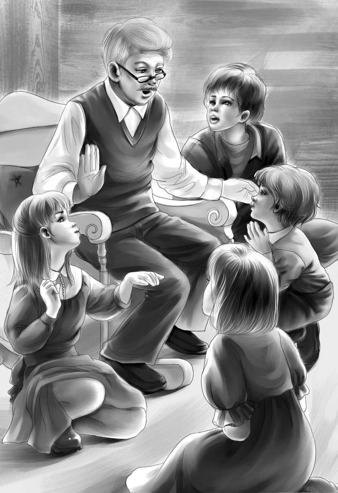

The children were lonesome after the wedding. They longed so much for Joe and Alice. But just then the mystery of the little yellow house began.
Supper was over. Warm air was blowing through the open windows， and birds were singing their evening songs.
As Mr. Alden sat down in his easy chair， he said with a pleasant smile， “Isn’t it time to think about summer plans？”
Henry looked at his grandfather.
“Grandfather，” he said， “do you mind if I ask you something？”
“No， of course not，” said Mr. Alden. “Ask anything you like.”
“You may not think it is polite，” said Henry slowly.

“But what is a grandfather for？” asked Mr. Alden， winking at Benny. “I know you are very polite to me always. Go ahead and don’t be afraid.”
“Well，” said Henry， “do you remember last fall I asked you why we never went into the little yellow house on Surprise Island？ You looked very cross for a minute， and Jessie and I were sure we had hurt your feelings.”
Jessie went on， “Don’t you remember？ You said， ‘That’s another story.’”
“Oh， I remember all right，” said Mr. Alden. “I never could forget that.” He looked from one face to another. “If you four children will come over here and sit down on the floor， I’ll tell you all about it. I guess the time has come when you ought to know.”
Mr. Alden waited until they were ready to listen， and then he began.
“You know I told you my father built the barn on Surprise Island for his best race horses？And that the man who took care of the horses built the little yellow house for himself？”
“The man’s name was Bill. He was about thirty years old then and so was I. I loved Bill very much. He took fine care of the race horses， and he lived in the little yellow house with his good wife.”
“Race horses！”cried Benny. “Did they race？”
“Yes， they raced while my father was living. My father was your great-grandfather， you know. Bill loved the horses， and he was a good，kind man. But I must tell you he was weak.”
“Not very strong， you mean？” said Benny.
“No， Benny，” said Mr. Alden sadly. “I don’t mean that at all. He was a very strong man. He could lift the boat. I mean he had a weak will. Anybody could tell him what to do.” Mr. Alden stopped.
“Don’t tell us， if you don’t want to！” begged Jessie.
“Yes， I want to tell you now. I’m afraid Bill was a coward. He would do anything his brother Sam told him. His brother had some bad friends.”
The children were suddenly very quiet. They knew that this was a sad story for their grandfather to tell.
“Let me go and get Watch， please！” cried Benny. “I’ll be right back.”
Everyone had to smile as Benny disappeared into the kitchen. They knew that Benny always wanted the dog when things did not go just right. He came back at once with Watch running after him.
“Lie down， old fellow，” said Henry. Watch lay down beside Benny and put his head on his paws.
“Well， one evening，” Mr. Alden went on，“ Bill’s wife， Margaret， noticed that Bill seemed to have something on his mind. He would not talk about it. After she had gone to bed， she heard a queer grating noise in the front room where Bill was. She got up and went to see what he was doing.”
There he sat，reading the paper. The noise had stopped. He asked her what she wanted and she told him about the queer noise. He said it must have been the waves on the rocks.
“But it wasn’t waves， and Margaret knew it. She began to be very much worried. She went back to bed and pretended to be asleep， and the noise began again.”
“Didn’t she ever find out what it was？” asked Benny.
“No， Benny， she never did. To this day， nobody knows what Bill was doing in that front room. This went on for two nights. The next night Margaret smelled something queer. She thought it might be paint. But when she came out， Bill was not painting. He was reading.”
“Then one night he went out to the barn to see the horses， and he never came back.”
“Never came back？” asked Violet.
“No. Margaret waited an hour. Then she took a light and went out to look for him. He had given the horses water， but he had left the barn door open. The rowboat was gone. Then Margaret telephoned to me. I got up and dressed and found a policeman. Captain Daniel took us over to the island in another boat. But of course it was dark and we couldn’t find a thing.”
“No clues？” said Benny.
“That’s right-no clues，”said Mr.Alden.“ Next day the island was full of policemen. They looked under the barn， under the dock， all through the woods. But they couldn’t find Bill. They found Bill’s rowboat a few days later. It was tied up at another dock about a mile away on the mainland.”
“Did they radio the news？” asked Benny.“ And get the F.B.I. men？”
“Oh， think， Benny！” said Henry.“ There weren’t any radios then.”
“Oh， I forgot that，” said Benny. “But at last they found him， didn’t they？”
“No， they never found Bill.” Mr. Alden stopped and then went on again.
“Margaret thought the clues were the queer smell and the grating noise in the front room. So the police went all over the little yellow house. They thought they might find a letter. Margaret thought she had seen Bill reading one.”
“You mean maybe a letter frightened Bill？” said Henry.
“Yes， that’s right. But they never found one. They took up the rugs. They hunted all through the desk. They even went down the chimney with a light.”
“Did they take up the floor boards？” asked Henry.
“No， they didn’t take them up. But they looked at every board in the house. There was dust between every two boards.”
“Why didn’t they put a notice in the newspapers？” asked Violet.
“They did. We had a notice in the paper every day for two years. But nothing ever came of it.”
“I’m so sorry for Margaret，” said Violet. “She must be old now.”
“Yes， my dear，” said her grandfather with a smile. “She seems old to you， I know.”
“Seems old？” said Violet. “Do I know her？”
“Yes， you all know her very well，” said Mr. Alden. “She is Mrs. McGregor.”
“Mrs. McGregor！” shouted all the children. They could not believe it. For Mrs. McGregor had taken care of them， and listened to their troubles ever since they had come to live with their grandfather. They could not think of her as young， or as anyone in a mystery.
At last Henry said， “I suppose she couldn’t live alone on the island， and so Great-grandfather gave her a home here？”
“That’s right. He asked her to come here to live with us as our housekeeper，and the next year he died. She has lived here ever since. We never talk about Bill now， and nobody has ever been inside the yellow house since that time.”
“It’s such a lovely little house！” cried Jessie.“It’s too bad it’s such a sad place and nobody can live there.”
Henry sat up and put his hand on his grandfather’s knee.
“Grandfather！” he said， “couldn’t we go into the little yellow house？ I do wish you’d let us. Just let us look around. We might find something.”
Mr. Alden looked at Henry and smiled.“ You’re a good boy， Henry. But do you really think you could find anything when the police couldn’t？”
“No， I suppose not，” said Henry.
But just the same， all the children kept looking at their grandfather.
Suddenly he leaned forward. “Do you really want to go？” he asked.
“Oh， yes！” they all answered.
“Well， all right. You may go. You may hunt around all you like， and see what you can find.”
Then Benny said， “I don’t want to go.”
“You don’t want to go！” shouted Henry.“ Why not？”
“Well， I think it would be mean to go without Joe and Alice，” said Benny. “They won’t come home from their wedding trip for two weeks.”
“Is that all？” cried Jessie. “You scared me，Benny. I thought you really didn’t want to go.”
“We’d all like to wait，” said Violet. “It will be much more fun if Joe and Alice go with us.”
“Wouldn’t it be wonderful if we found something？Some clue？” cried Henry.
“Yes，it would，” said Mr. Alden. “But I don’t think you will.Don’t talk about this to Mrs. McGregor yet， will you？”
“We won’t，” promised Henry. “Look，Benny， you won’t tell， will you？”
“I never tell secrets， do I？” asked Benny. “I never told where Joe and Alice went on their wedding trip， did I？”
“Do you know？” asked Henry， in great surprise.
“Of course I do.”
“You do？” said Mr. Alden. “I don’t know myself. Nobody told me.”
“They told me I could tell you two days after the wedding. That’s right now.”
“Well， where did they go？” cried Jessie.
“They went to our barn on Surprise Island，” said Benny. “That was another surprise， because they are so near， and everyone thinks they are far away.”
“Just think of that！ Our very own barn where we stayed last summer！” cried Jessie.
“That’s right，” said Benny. He was delighted to surprise even his grandfather.
“Well，” said Henry， “now I can hardly wait for them to come home.”
“I shan’t sleep a wink tonight，” said Jessie. “I shall be thinking of Joe and Alice， and the little yellow house.”
They all expected to stay awake all night， but they were soon all sleeping quietly， even Watch.